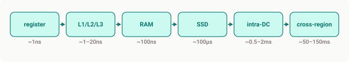
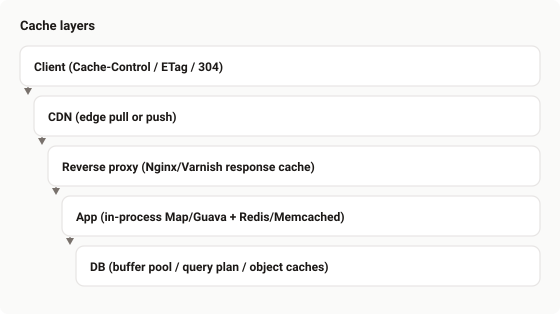
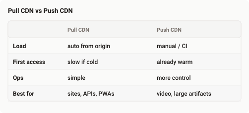
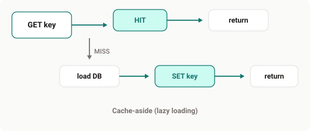
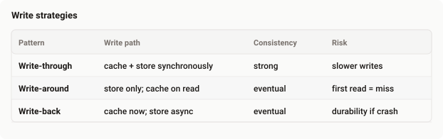
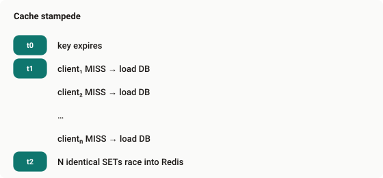

Caching is not a speed button. It is an amortized latency bet that loses whenever the miss rate is high enough, or when a stampede turns one expired key into a thundering herd against your database. Teams that “just add Redis” without measuring often discover the cache adds latency on the path that actually matters.
This post is the mechanism-first version: the break-even formula, the layer stack (CDN only briefly — that infrastructure story is already covered elsewhere), the read and write patterns that don’t blow up production, invalidation that scales past TTL-only, and the stampede mitigations that belong in every SaaS cache design.
The decision formula
Every request that goes through a cache pays a lookup cost. On a hit you win; on a miss you pay lookup plus the original data access. The average latency is:
AverageTime = DataAccessTime × CacheMissRate + CacheAccessTimeWork the numbers. Suppose DataAccessTime = 100ms (DB + network) and CacheAccessTime = 20ms (Redis round-trip in the same AZ). Without a cache every request costs 100ms. With a cache:
100 × CacheMissRate + 20 < 100
CacheMissRate < 0.8If your miss rate is ≥ 80%, the cache is net-negative on latency. That threshold moves with the ratio of the two times: a 2ms in-process cache against a 100ms DB gives you a much higher miss budget; a 40ms remote cache against an 80ms DB is ruthless. Measure hit rate and p99 before you celebrate the architecture diagram.
Two failure modes hide in “we cached it”:
- Misses still pay the cache round-trip before falling back to the source.
- Population work (CPU, memory, network) must be justified by the hit volume that follows.
Latency hierarchy (why a hit still matters)
When a cache hit replaces a network hop, the win is often orders of magnitude — not a few percent:

An in-process hit that avoids Redis is cheap. A Redis hit that avoids Postgres is usually worth it. A Redis miss that still hits Postgres is the case the formula above is warning you about.
The layer stack
Modern apps don’t have “a cache.” They have a stack where each layer shields the next:

Client. Browsers honor Cache-Control, ETag, and Last-Modified. max-age=3600 caches for an hour; no-cache stores but revalidates; no-store skips caching. Conditional requests return 304 Not Modified without a body when the content is unchanged.
CDN. Edge nodes serve static (and sometimes API) content near the user. Pull CDN fetches from origin on first miss; Push CDN uploads ahead of traffic (releases, large media). Keep this layer short here — the networking post already covers CDN as infrastructure.

Reverse proxy. Nginx in front of /products/123 can serve a cached HTML/JSON response without waking the app. Good for mostly-static pages and long-TTL API responses; pair with stale-while-revalidate when you can.
Application. In-process maps for hot, tiny working sets; Redis/Memcached for shared state across pods. The app owns key design, TTL, and invalidation — this is where most SaaS footguns live.
Database. Buffer pools and plan caches are already there. Application-level query-result and object caches sit on top when the same rows or aggregates are hit repeatedly.
Read-intensive patterns
Cache-aside (lazy loading). The application owns the cache. Read path:

Simple, flexible, and the default for most services. Cost: first request after expiry is always a miss, and the app must own invalidation on writes.
Read-through. The app always talks to the cache; the cache library loads from the store on miss. Cleaner call sites, less control over population policy.
Refresh-ahead. Predict hot keys and refresh before TTL expires so users rarely see a miss. Useful for CDNs, trading boards, and anything with predictable peaks — wasteful if your predictor is wrong.
Write-intensive patterns

Write-through keeps cache and store aligned; use it when wrong data is worse than slow writes (ledgers, inventory that must not lie).
Write-around avoids polluting the cache with write-once keys (logs, bulk imports). The next read pays a miss — acceptable when re-reads are rare.
Write-back / write-behind is the speed play: acknowledge after cache write, flush later. You traded durability. Fine for counters and ephemeral buffers; not fine for money.
TTL, eviction, and jitter
TTL bounds staleness. Too short → miss rate climbs. Too long → users see yesterday’s catalog. Identical TTLs across a hot key set expire together — synchronized expiry is a stampede invitation. Add jitter:
ttl = base_ttl * (1 + uniform(-0.10, +0.10)) # ±10%Eviction when memory is full: LRU is the sensible default (recent ≈ relevant). LFU keeps stable popular items and can cling to yesterday’s viral post. ARC adapts between recency and frequency when you outgrow LRU and can afford the complexity. Name the algorithm; don’t cargo-cult “we use Redis” as if Redis’s default answers the access pattern.
Invalidation beyond TTL
TTL-only is fine until a product price must change in seconds. Then you need explicit delete/refresh, or better: event-driven invalidation.
Delete (evict) forces a miss on next read. Refresh writes the new value immediately when you already have it. Tagging and versioning scale invalidation: tag keys with product:456 and drop the whole tag when that product changes; bump a version prefix (v3:user:42) when a release or schema change must nuke a generation of entries.
Stampede (thundering herd)
One hot key expires. N concurrent requests all miss. All N hit the database for the same row. Latency cliffs; DB CPU spikes; sometimes the cascade continues.

Mitigations that work in production:
- Single-flight / lock: only one loader proceeds; others wait or subscribe for the fill.
- Stale-while-revalidate: serve the expired value while one background refresh runs.
- Probabilistic early expiration: a few requests refresh slightly before TTL so expiry is soft.
- Negative caching: cache
NOT_FOUNDwith a short TTL so missing keys don’t hammer the DB. - TTL jitter: as above — desynchronize mass expiry.
Multi-tenant caching
Always prefix by tenant. Never let a hot key from tenant A collide with tenant B’s namespace, and never share mutable tenant data under a global key:
tenant:{tenant_id}:user:{user_id}
tenant:{tenant_id}:product:{sku}Watch Redis memory as a noisy-neighbor surface: one tenant’s unbounded working set can evict everyone else’s hot keys. Per-tenant memory budgets, key counts, or separate Redis logical DBs / clusters for large customers turn this from a surprise into a quota.
When not to cache
- Write-heavy unique keys with almost no re-reads — you pay population cost for nothing.
- Rapidly changing inventory without an invalidation path — you’ll serve lies.
- Secrets and PII without encryption-at-rest controls and clear TTL/scrub policy.
- Anything where you haven’t measured miss rate and source latency yet.
Key takeaways
- Compute the miss-rate break-even before adding a cache layer; low-hit caches add latency.
- Design a stack (client → CDN → proxy → app → Redis → DB), not a single “cache box.”
- Pick read/write patterns deliberately: cache-aside for most apps; write-through when consistency wins; write-back only when durability risk is acceptable.
- TTL + jitter + LRU (or ARC) cover the common case; event-driven invalidation covers the rest.
- Stampede is a production regularity — single-flight, SWR, negative caching, jitter.
- Tenant-prefix every key; treat Redis memory as a multi-tenant resource.
Cache should be transparent, predictable, and measurable. The decision to use it belongs to metrics, not intuition — that’s when it stops being “another optimization” and becomes architecture.